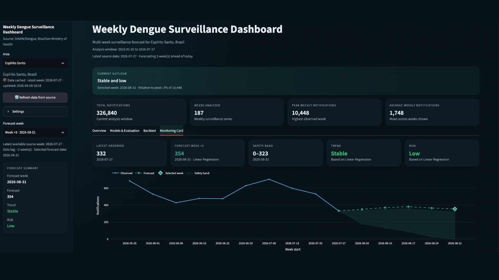

Live data product
Dengue Surveillance & Forecasting
An end-to-end public-health data product that ingests official Brazilian surveillance data, evaluates forecasting models using time-aware backtesting, and serves interactive forecasts through Streamlit.
5
forecast approaches
250K
row processing chunks
5
states deployed